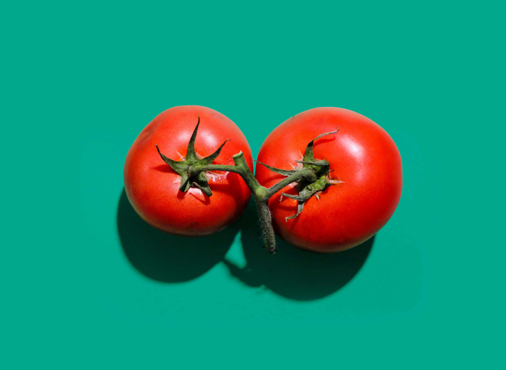

Caprese Bruschetta
Pedro says this is tasty

Ingredients
- Good thick bread
- Mozzarella, sliced
- Good tomatoes, sliced
- Pesto
- EVOO
- Balsamic glaze
Instructions
- Fry the bread in a teeny bit of oil.
- Add a little oil to the pesto if too thick.
- Toast the other side of the bread
- Put pesto on the bread and then alternating slices of tomato and mozzarella. If the pesto isn't too salty, sprinkle tomatoes with a little salt.
- Drizzle with balsamic glaze.